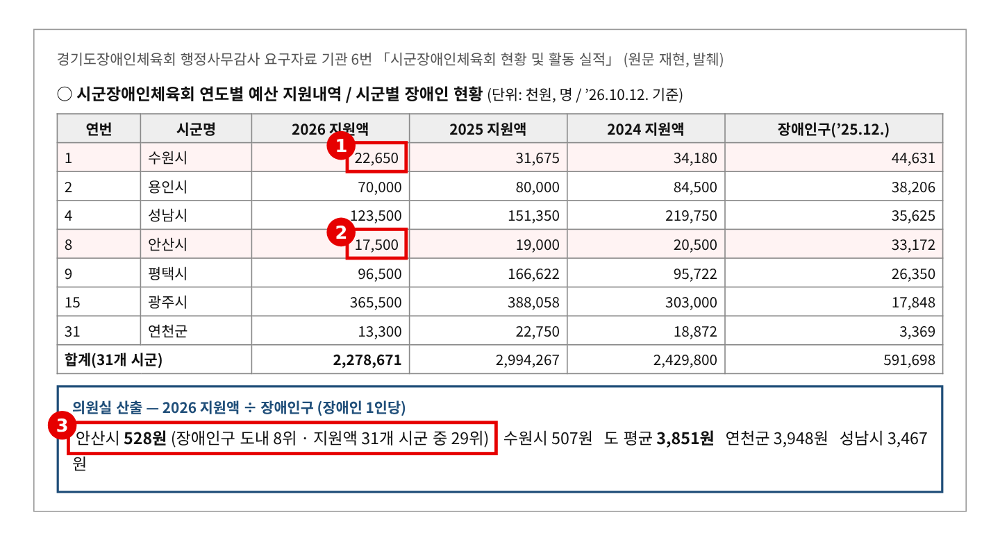
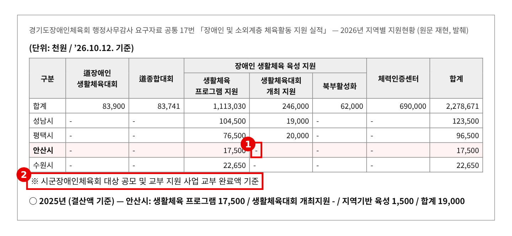
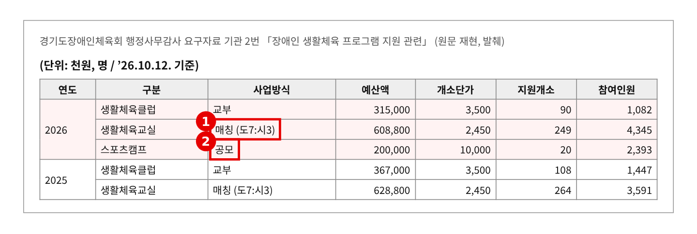
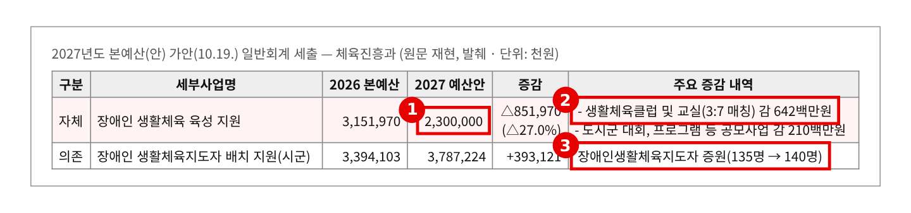

2026년 행정사무감사 질의서 (발언용 · 5분) — 기관 2일차
장애인이 많은 도시가 가장 적게 받습니다
— 시군 장애인 생활체육 지원, 1명당 528원과 3,851원
문화체육관광위원회 황은화 위원 → 경기도장애인체육회 사무처장
| ① 장애인 많은 도시가 가장 적게 받는다 | 안산 장애인 33,172명(도내 8위), 2026년 시군 지원 1,750만 원(31개 중 29위) — 1명당 528원, 도 평균 3,851원 → 수원도 1명당 507원. 안산은 2,050만 → 1,900만 → 1,750만 원, 3년째 감소 |
| ② 공모·매칭이라 신청 못 하면 못 받는다 | 생활체육교실 매칭(도7:시3), 스포츠캠프·대회 개최 공모 — 안산은 대회 개최 지원 0원 → 저조 시군의 원인을 살피고 찾아가서 돕는 장치가 없다 |
| ③ 2027년 생활체육 육성 27% 감액 | 31억 5,197만 → 23억 원(△27%), 「생활체육클럽 및 교실(3:7 매칭) 감 642백만원」 → 매칭 비율이 바뀌면 시 예산이 적은 곳부터 교실이 닫힌다 |
※ 의원실 메모 (발언 제외) — 다른 위원 요구자료와 겹치는지 점검 · 겹칠 위험 높음. 6번 시군장애인체육회 현황(김승기·안시현·전예슬·최성운), 1번 생활체육대회 참가자(김승기·안시현·최성운·한규찬), 2번 생활체육 프로그램(이병숙·김승기·안시현·최성운)을 다른 위원들이 요구했다. "참여 인원이 줄었다"는 앞 순서에서 나올 가능성이 크다. · 그래서 이 질의는 "장애인 수에 비해 지원이 적은 대도시"와 "공모·매칭 구조", "2027년 매칭 비율"로 좁힌다. 앞에서 참여 감소가 나왔다면 도입에서 "앞서 참여 감소 말씀이 있었습니다만, 저는 돈이 어디로 가는지 보겠습니다"로 받는다. · 이미정 위원 질의(포상금 세금·대회 출전 지원·당사자 임원)와는 겹치지 않는다. 17번(지역별 지원현황)은 공통자료(이오수·이지혜·채명신 요구). · 6번의 "수혜인원"은 생활체육대회 참가 선수와 대한장애인체육회 통합정보시스템 등록 승인 인원을 합친 숫자이고 2026년은 10.12. 기준이다. 안산 683→425→105명 감소는 등록 인원 변화가 섞여 있어 발언에서는 쓰지 않는다. 2027년 「(3:7 매칭)」은 가안 설명란 표기라 단정하지 않고 묻는다. |
※ 발언 중 [근거 n] 표시는 맨 뒤 「근거자료」 번호입니다. 읽지 않고, 해당 자료를 화면에 띄웁니다.
■ 발언 — 도입
사무처장님, 시군 장애인 생활체육 지원에 대해 여쭙겠습니다.
장애인체육회는 시군장애인체육회를 통해 생활체육 프로그램과 대회, 체력인증센터를 지원합니다. 올해 31개 시군에 나간 돈이 22억 7,867만 원입니다. 이 돈이 장애인이 사는 곳에 맞게 가고 있는지 보겠습니다. [근거 1]
▶ 질문 1. 장애인이 많은 도시가 가장 적게 받습니다
안산에는 장애인이 3만 3천 명 넘게 삽니다. 도내에서 여덟 번째로 많습니다. 그런데 올해 안산이 받은 돈은 1,750만 원, 31개 시군 가운데 세 번째로 적습니다. 장애인 한 명으로 나누면 528원입니다. 도 평균은 3,851원입니다. [근거 1]
수원도 마찬가지입니다. 장애인이 4만 4천 명으로 가장 많은데, 한 명당 507원입니다. 안산은 3년째 줄었습니다. 2,050만 원, 1,900만 원, 올해 1,750만 원입니다. [근거 1]
사업별로 보면 이유가 보입니다. 안산은 생활체육 프로그램 지원 말고는 받은 게 없습니다. 생활체육대회 개최 지원은 0원입니다. 이 돈은 대부분 공모와 매칭으로 나갑니다. 신청하지 않거나, 시가 돈을 보태지 못하면 받을 수가 없는 구조입니다. [근거 2][근거 3]
사무처장님, 장애인이 많은 대도시가 가장 적게 받는 구조, 알고 계셨습니까? 신청이 적은 시군은 왜 적은지 따로 살펴본 적이 있습니까?
▷ "공모라서 신청한 시군에 지원한 것이다"
→ 그래서 여쭙는 겁니다. 공모는 준비된 곳이 가져갑니다. 장애인 수에 비해 지원이 적은 시군을 찾아가서 신청을 돕는 것이 도 장애인체육회 역할 아닙니까?
▶ 질문 2. 내년에는 더 줄어듭니다
2027년 예산안 가안을 보면 「장애인 생활체육 육성 지원」이 31억 5천만 원에서 23억 원으로 27% 줄어듭니다. 줄이는 내용은 생활체육클럽과 교실 6억 4천만 원, 도·시군 대회와 프로그램 공모 2억 1천만 원입니다. [근거 4]
그런데 설명란에 "(3:7 매칭)"이라고 적혀 있습니다. 올해 생활체육교실은 도가 7, 시가 3입니다. 내년에 도 3, 시 7로 바뀌는 거라면, 시 예산이 적은 곳부터 교실이 문을 닫습니다. [근거 3][근거 4]
반면 국비가 붙은 장애인 생활체육지도자는 135명에서 140명으로 늘어납니다. 가르칠 사람은 늘리고, 가르칠 교실 예산은 줄이는 겁니다. [근거 4]
사무처장님, 내년에 매칭 비율이 바뀝니까? 줄어든 예산은 어느 시군부터 줄어듭니까?
▷ "예산 편성은 체육진흥과 소관이다"
→ 집행은 장애인체육회가 합니다. 시군별로 얼마나 줄어드는지 따져 본 자료가 있다면 내 주십시오.
■ 마무리 · 요구사항
사무처장님, 장애인 생활체육은 집 가까이에서 꾸준히 할 수 있어야 합니다. 지금은 장애인이 많은 도시일수록 덜 받습니다. 내년에 예산이 줄면 그 차이는 더 벌어집니다. 꼼꼼히 챙겨 주십시오.
하나, 2024년부터 2026년까지 31개 시군별 장애인 1명당 지원액과 사업별 신청·선정 현황, 지원이 적은 시군의 원인 분석을 감사 종료 전까지 내 주십시오.
둘, 2027년 생활체육클럽·교실 매칭 비율과 시군별 감액 영향을 2027년 본예산 상임위 심사 전까지 보고해 주십시오.
셋, 장애인 수에 비해 지원이 적은 시군을 위한 찾아가는 신청 지원과 우선 배정 기준을 2027년 3월까지 마련해 주십시오.
■ 참고 · 감사 중 추가 요구자료
· 2026년 생활체육 프로그램·대회개최 지원 공모 시군별 신청·선정 내역(안산·수원 포함)
· 2027년 「장애인 생활체육 육성 지원」 (3:7 매칭) 표기의 뜻과 산출 내역
· 예상 소요시간 — 발언 약 3분 5초(916음절) + 집행부 답변 약 40초(질문당 20초) + 자료 화면 전환 약 25초 = 약 4분 10초. 재질의 1~2개와 답변까지 쓰면 약 4분 50초 — 5분 안 ※ 분당 300음절 기준
근 거 자 료
빨간 상자·번호는 발언에서 짚는 부분입니다. "원문 재현"은 요구자료 원문 표를 그대로 옮긴 것이고, "의원실 산출"은 원자료로 계산한 값입니다.
▶ 질문 1 관련
근거 1. 시군별 지원액과 장애인구 
※ 출처: 경기도장애인체육회 「2026년도 경기도의회 행정사무감사 1-3차 요구자료」 기관 6번 「시군장애인체육회 현황 및 활동 실적(최근 3년)」(체육지원팀), ’26.10.12. 기준 — 김승기·안시현·전예슬·최성운 위원 요구 |
근거 2. 2026년 사업별 시군 지원 — 안산은 프로그램 지원뿐 
※ 출처: 경기도장애인체육회 「2026년도 경기도의회 행정사무감사 1-3차 요구자료」 공통 17번 「최근 3년간 장애인 및 소외계층 문화, 예술, 체육, 관광활동 지원 실적」 — 지역별 지원현황(2026·2025년) |
근거 3. 생활체육 프로그램 지원 방식 
※ 출처: 경기도장애인체육회 「2026년도 경기도의회 행정사무감사 1-3차 요구자료」 기관 2번 「장애인 생활체육 프로그램 지원 관련(최근 3년)」(체육지원팀) — 이병숙·김승기·안시현·최성운 위원 요구 |
▶ 질문 2 관련
근거 4. 2027년 본예산(안) — 생활체육 육성 27% 감액, 지도자는 증원 
※ 출처: 「2027년 본예산(안) 일반회계 세출」 가안(10.19. 공개분, 최종본 아님) 체육진흥과 |